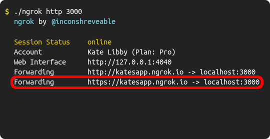
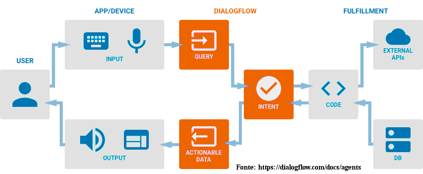
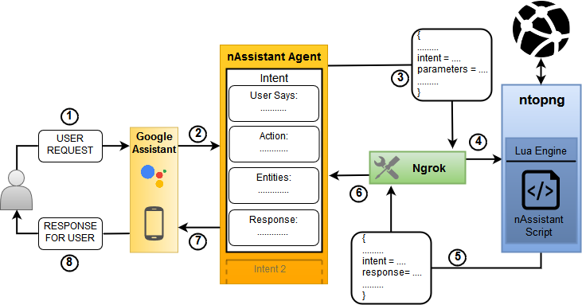

To know:
Steps:
Download and install ntopng from the link above; You can find all the info about the installation inside the folder 'ntopng/doc'
Download the link at the top of the page, you'll need the two file named 'nAssistant': one is a folder and the other a zip file; put the 'nAssistant' folder inside ntopng installation folder: /ntopng/scripts/lua/. The other file 'nAssistant.zip' will be usefull later
You need to have a Google Account, Android device with Google Assistant installed and ntopng running in your network
Now, let's create the Action:
One way to expose ntopng to the Internet is to use a tunneling app: we recommend Ngrok. Follow the info HERE for download and intall it
After that, start ngrok on the terminal with the command ngrok http [ntop port] (like in the image below) where 'ntop port' is the port where ntop server is listening (default port is 3000);
Two address will be displayed, copy the second-one with the https protocol and paste it into the Dialogflow console fulfillment URL (see previous step, slide 12) and press 'save' at the bottom of the page
nAssistant is a multimedia assistant for monitoring network traffic; is implemented as a Google Action, the dialogue structure is built with the tools offered by dialogflow, while the content is aggregated and built within ntopng, which has the role of back-end / fulfillment.
The Dialogflow agent and the related tools making up the dialogue (entities, intents, etc.) are inside the nAssistant02.zip file.
All the aggregation, presentation and communication scripts with google assistant are in the "ntopng / script / lua / nAssistant" folder.
Here is a brief introduction to the source files (utility scripts ignored):
assistant.lua: binds the dialogue points, created on dialogflow, to the related handlers implemented in ntopng
dialogflow_API.lua: to make ntopng communicate with google's Action service
handlers.lua: implementation of the assistant's features
network_state.lua: aggregator of information representing the state of the network
More, particular informations are in the code as comments.
The main components for communication are:
Google Assistant: the application that allows you to communicate remotely with the network assistant (nAssistant). Executable from Android devices and supported.
Dialogflow Agent: NLU (Natural Language Understanding) module, is responsible for transforming user requests into requests for the service, through the use of Intent. Represents the part of nAssistant that handles the conversation with the user.
Ntopng: deals with traffic control. It has a server listening to the agent, as soon as it receives requests it executes the appropriate scripts that process the data, create the response and send it. These scripts are the part of nAssistant that deals with aggregation and data synthesis.
Let's look at the last two in detail
Dialogflow Agent
NLU form that can be used by services or products, which want to transform a user's natural request into usable data; a mechanism, we could say, similar to a trigger. Once programmed and trained (it also uses Machine Learning) it takes care of translating the user's intentions (query) into data (Intent), precisely into suitably formatted JSON files, which will be sent with a POST HTTPS to a known address (webhook) , in this case the address of our server ntopng. To better understand the intentions of the user, this module helps with the use of the Context, ie contexts, circumstances, which represent the point in which we find ourselves within the discourse.
in the image below it is possible to observe how the agent acts as an intermediary between the devices with which the user interacts and the logic behind the service he wants to offer: the user expresses his intension through an application or a device, which processes the request and sends the audio and / or text file to the Dialogflow agent that associates the request with a predetermined functionality. Once this is done, send the request to the ntopng server, where the response is created and sent back to the user.

Ntopng
It is a software for network analysis and monitoring: light, high-performance, multi-platform and open-source, which makes it particularly suitable for the project.
Briefly we can say that it is composed mainly of four levels:
Ingresslayer (capture streams / packages)
Monitoring engine: the core of ntopng
Lua scripting engine (the part affected by the project)
Data export layer (via web, syslog or log file)
Fundamental to us is the Lua script engine, which can be represented as the Fulfillment part described in [small_comunications]. Within the assistant, these scripts will be responsible for extracting, processing and synthesizing the information passing on the network interfaces being monitored through the APIs offered by ntopng
Finally, before seeing how full communication takes place, it is necessary to introduce Ngrok: a tunneling tool, ideal for testing cloud services using your own machine as an end-point. In practice it exposes the local servers, behind Firewall or NAT, making them visible on the Internet, through a secure tunnel, providing a public IP address.
A tunneling tool may be necessary as the Dialogflow webhook must offer to the Dialogflow agent a public URL, on which it will receive POST HTTP(S). In this specific case the Ngrok functionality is used which provides a websocket connection over an HTTP tunnel, which can be activated with the command: "ngrok http [port]", where "port" indicates the number of the port on which the server is listening (see the last step of the guide at the beginning).

Shortly, to discover all the functionality ask directly to the assistant "What can you do?"
The assistant offers monitoring features such as Top Application Protocols and Top Traffic Categories.
Also, per-host information are divided in: network, security, general, application, categories.To get information about hosts there are 2 ways:
Directly search a host by name or ip address
Via the "who is in [name of category/app]" command, which can be used after displaying the graphs concerning the traffic volume
About security, the assistant presents 3 levels of analysis that follow one another:
The first shows, if present, the ThreatScore of all suspicious hosts within the network.
The second level, as soon as a specific host is indicated, shows the causes of the ThreatScore of this host.
The third shows, if present, additional information relating to the problem selected in the previous level.
After all, a list of example to start a conversation are:
"Show the top applications traffic"
"Which are the top traffic categories"
"Talk me about security"
After that, follow the suggestions in the bottom of the screen to discover other functionalities
The best way to undersatnd how the assistant work and, consequently, be able to modify/extend, is to read, firt this guide, after the code
Shortly, how to add functionality and / or modify an existing one
Add/Change one (or more) intents within the Dialogflow agent. Remember that an intent represents the user's intention
Inside assistant.lua add the function that will manage the intent just created (controls the other handlers, the structure of the answer is self-explanatory)
In handler.lua insert the implementation of the handler function above
Powered by w3.css